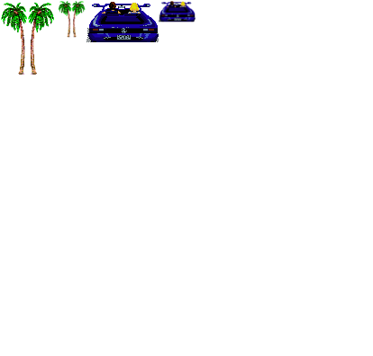
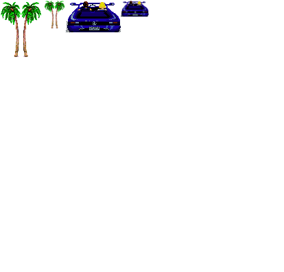

For this game I´m using the HTML canvas tag, currently only runs on Chrome and Safari. This game is to be a clone of old school racers using pseudo 3d graphics.
I´m using the information on Lou's Pseudo 3d Page: http://www.gorenfeld.net/lou/pseudo/ to do the track animation, although I´m not doing the exactly same method listed there.
The art is placeholder, the car I got from http://www.spriters-resource.com/ (ripped from genesis outrun), the palm tress I ripped my self from the same game. The track is from the Lou's Pseudo 3d Page, whith some color changes. And the horizon is from: Panoramic Earth
I have done all the coding using notepad++ and vim, and used the chrome developer tools, specially the javascript console, for debugging. All the editing of the images was done using GIMP and MS-paint.
The repository for this project can be found at: http://github.com/vvecchi/Canvas